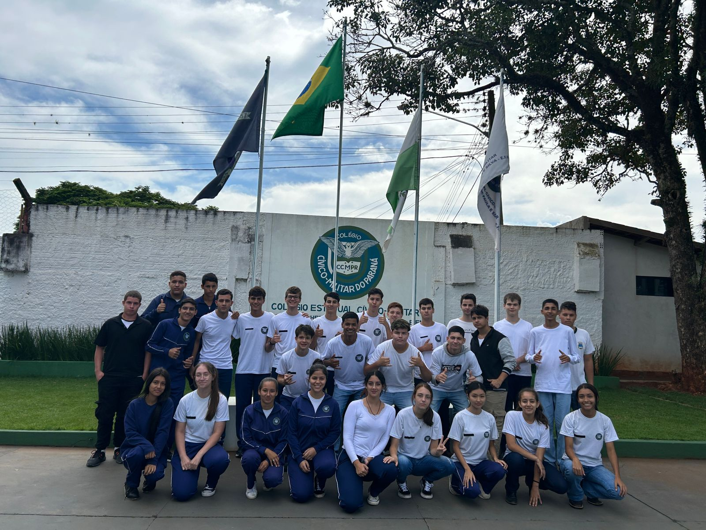

AGORA VAMOS FALAR SOBRE A SALA QUE ATINGE A PORCENTAGEM DE PRESENÇA MELHOR DA ESCOLA ( 2B )
AQUI CONTAMOS COM 30 ALUNOS, ESTÃO ELES:

ANNA CAROLINA, CAMILA RISSA, CARLOS EDUARDO RODRIGUES, CARLOS MANEUL, ELIAS JUIANO, EVELIN CRTISTINY, FELIPE MANOEL, GABRIEL ARAUJO, GUSTAVO DE SOUZA, GUSTAVO SILVEIRA, HAMMURAB ABUCARUB, JESSICA SUELEN, JOÃO TOMMASCO, JOÃO VICTOR DE OLIVEIRA, JOÃO VICTOR HUGO, KETLIN DOS SANTOS, LETICIA VERCHINSKI, LUIS MIGUEL, MARIA EDUARDA, MATEUS DA COSTA, MURILO SAID, NILTON RAMOS, PATRICIA RAMOS, PEDRO LUCAS, RAFAEL MARTINS, SUELLEN APARECIDA, VICTOR IOSHIO, WILLIAM APARECIDO, CESAR AUGUSTO.